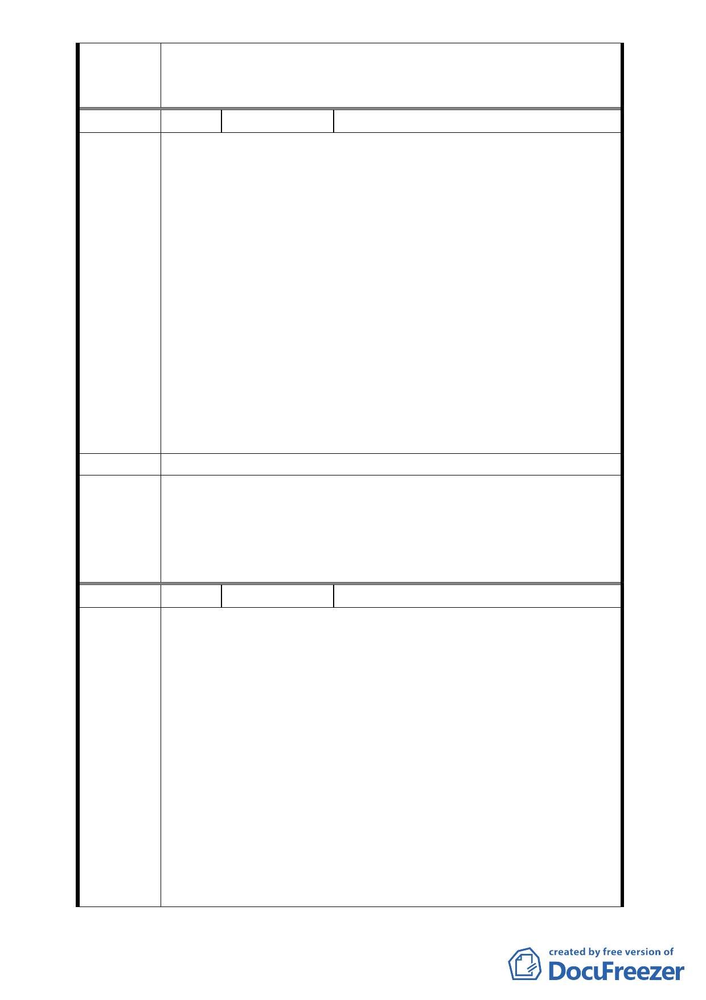

案內更新地區土地所有權人之權益，本案將配合更新事業核定
公告細部計畫，並依「臺北好好看」開發計畫案規定時程開工，
否則仍維持原計畫不予變更。
編 號4
陳情人 謝春木
1. 這塊地至今已整合十多年，並經歷多家不同建商，都沒有
整合開發完成。這次因為郝市長大力推動臺北好好看計
畫，才使得這塊地好不容易有機會整合開發的機會，希望
市政府能大力幫助我們這些當地人，早日完成改建計畫，
讓我們能住新的、安心的房子。
2. 本案位在內湖行政中心的正對面，但是遲遲未能整合開
發，不僅有損內湖區的形象，同時也浪費了難得的一塊商
陳情理由 業用地。現今鄰民權東路處有部分土地被建商以鐵板築起
圍牆，上面寫著蓮園建設，可能是要蓋房子。但那塊土地
並不大，如過真的蓋起來也不好看，也會阻礙全區的整體
規劃與發展，甚至使後面的土地沒有辦法開發。希望市政
府能站在對全體土地、建築所有權人最有利的方向，以及
都市發展最好的方式，讓這塊地朝者整個一起設計、利用
的方式規劃，千萬不要讓少部分的人，綁架、妨害到大多
數人的權利，同時妨害都市的整體發展。
建議辦法
－
本案修正劃定更新地區範圍，應包括東側原 4 公尺寬道路用地
委員會決
議
與公園用地，以與本案變更計畫範圍一致；另為兼顧申請者與
案內更新地區土地所有權人之權益，本案將配合更新事業核定
公告細部計畫，並依「臺北好好看」開發計畫案規定時程開工，
否則仍維持原計畫不予變更。
編 號5
陳情人
陳裕德
聲請書
陳裕德（以下簡稱本人）所有坐落臺北市內湖區文德段四
小段 18 地號土地（持分六分之一），於民國 97 年 12 月 19 日與
蓮園建設股份有限公司（合約中之乙方）簽訂「臺北市內湖區
文德段四小段 16、18、19、20-1、21-2 地號等 5 筆土地合建案」，
本人本著相互信任原則，堅信蓮園建設股份有限公司會努力整
陳情理由
合前述 5 筆土地推動合建，簽約同時簽署土地使用權同意書。
惟近日與本人所有土地後方土地（臺北市內湖區文德段四小段
19、20-1、21-2 地號）知地主閒談才知道蓮園建設股份有限公
司未與他們商談合建事宜，且蓮園建設股份有限公司已於 98
年 4 月 24 日以臺北市內湖區文德段四小段 16、18 第號申請建
照執照（掛照號碼：098-7131），險與合建契約書中第十五條附
則、第十二項：「字簽約起一年內乙方需整合完成同區段 16、
19、20-1、21-2 地號土地加入合建基地，逾期未完成整合時，
- 14 -